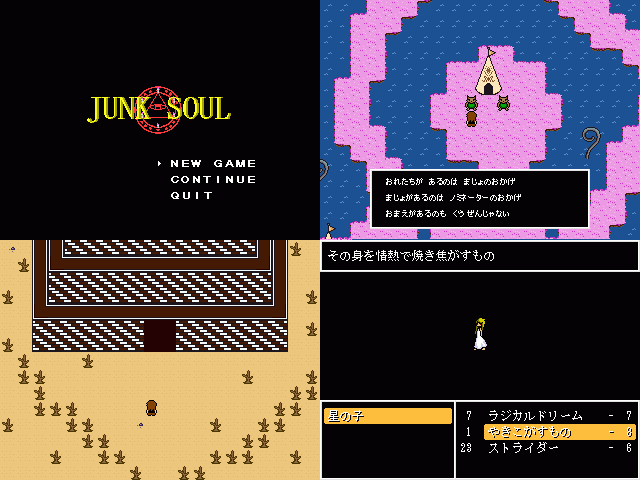

| No,005 【ＪＵＮＫ ＳＯＵＬ】 |
| ダウンロード（1.26MB） |
 |
| 【ＨＮ】 まぼ 【コメント】 また体験版とか情けないってレベルじゃねーぞ
楽しみにしてくれてた人には本当に申し訳ない とりあえずＧＷ版と変わった所
・ダンジョン２つとボス４体追加 ・難易度がちょっと低下 ・ＢＧＭを物故抜き素材から正規の素材に ボス戦とかで詰まったら同梱の攻略テキスト見て下さい
|
| 【管理人コメント】 前回のＧＷ祭りで途中まで公開された作品 独特な雰囲気がみりきだと思います＞＜ |